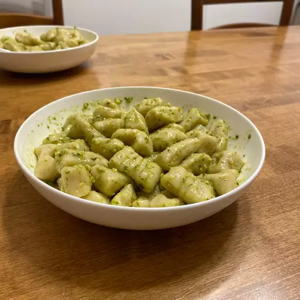

Gnocchi recipe

Description
Gnocchi (singular gnocco) are Italian dumplings made with flour, eggs, and potatoes.
Gnocchi can be served in tomato sauce, tossed with pesto, or sautéed with butter and herbs.
Ingredients
Steps
- Boil and mash the potatoes.
- Combine the ingredients, then knead into a ball.
- Shape the dough into "snakes."
- Cut the snakes into pieces.
- Boil and drain the gnocchi.